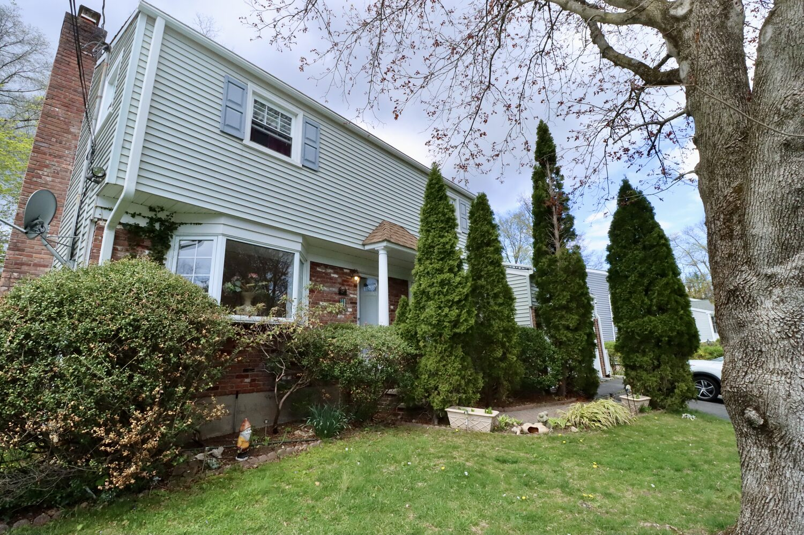

A realtor in Stamford, CT costs whatever you and the agent agree to — commissions are fully negotiable, with no fixed or "standard" rate. Fees are typically a percentage of the final sale price, historically split between the listing side and the buyer side, and paid at closing. Since the 2024 NAR settlement, buyers sign a written agreement stating exactly what their agent charges, and buyer-agent compensation is negotiated deal by deal.

How realtor commissions work in Stamford
When you hire a listing agent to sell your home, the fee is set in your listing agreement — a contract you negotiate and sign before the home goes on the market. The fee is typically a percentage of the final sale price rather than a flat bill, and in most listing agreements it's paid at closing, out of the sale proceeds — not upfront. If the home doesn't sell, most listing structures mean no commission is owed (confirm this in your specific agreement).
What that percentage is depends on what you negotiate. It varies with the level of service (full marketing campaign vs. limited service), the property and price point, and your situation. The median asking price for homes currently for sale in Stamford is $1.1M, so even a small difference in percentage terms is real money — which is exactly why the fee conversation is worth having openly, before you sign.
What changed in 2024 — and what it means for you
In August 2024, practice changes from the National Association of Realtors settlement took effect nationwide, and they changed how buyer-side compensation works:
- Buyers now sign a written agreement first. Before touring homes with an agent, buyers sign a buyer-representation agreement that states exactly what the agent will be paid and how. No more vague arrangements — it's in writing, up front.
- Offers of buyer-agent compensation no longer appear on the MLS. Whether and how much a seller contributes toward the buyer's agent fee is negotiated directly, deal by deal.
- Who pays the buyer's agent is a negotiation. The compensation can be paid by the buyer directly, covered by the seller as a negotiated concession in the offer, or a combination. Sellers can still choose to help cover it to attract more buyers — but it's a deal point, not a rule.
The practical takeaway for both sides: everything is on the table, and everything goes in writing. That's genuinely good for consumers — it forces the fee conversation into the open, where it belongs.
What sellers get for the commission
A listing fee isn't a toll — it pays for the work that determines your final number. Before you compare fees, compare what's included:
- Pricing strategy: a comparative market analysis (CMA) and a pricing plan built for your specific street and property — the single biggest lever on your outcome. See what your house is worth.
- Prep and presentation: guidance on what to fix, what to skip, staging advice, and professional photography.
- Exposure: MLS entry syndicated to the major portals, plus the agent's own marketing channels.
- Showings and offers: coordinating access, qualifying buyers, and running the negotiation — including multiple-offer situations.
- Contract to close: managing inspections, appraisal, attorney review, and Connecticut's disclosure requirements through to the closing table.
For the full picture of selling costs beyond commission — conveyance taxes, attorney fees, and more — see how much it costs to sell a house in Stamford.
What about renters? Fees in Connecticut
Rental agent fees in Connecticut are a genuine "it depends." Both models exist side by side: on some listings the landlord or owner pays the agent's fee, and on others the tenant pays it. The amount and structure vary listing to listing, too. Stamford currently has 583 rentals on the market, and who pays the fee differs across them.
The rule that protects you: ask before you tour. "Is there a fee on this one, how much, and who pays it?" is a completely normal question, and any good agent answers it plainly. A fee should never be a surprise at lease signing.
How to talk about fees with any agent
Discussing fees isn't awkward — it's the sign of a professional conversation. Questions worth asking any agent, including me:
- "What is your fee, and exactly what does it include?" Get the service list, not just the number.
- "How is the agreement structured, and how long does it run?" Know the term and how it ends.
- "For buyers: how does your compensation work if the seller offers a concession — or doesn't?" Your written agreement should already answer this.
- "For sellers: what's the marketing plan, specifically?" Photos, channels, timeline — in writing.
- "Can we adjust the scope?" Service levels vary, and so do fees. There's nothing wrong with asking.
Where I stand on fees
My structures are competitive and transparent: I explain the fee and everything it covers, line by line, in writing, before you sign anything — and I'd rather you ask the hard questions up front than wonder later. A CMA on your home is free, no obligation, whether or not you list with me. If you're a buyer wondering whether an agent is worth it at all, I wrote an honest answer to that too: do you need a realtor to buy in Stamford?
→ Ask me about fees directly · Full cost of selling → · See the market →